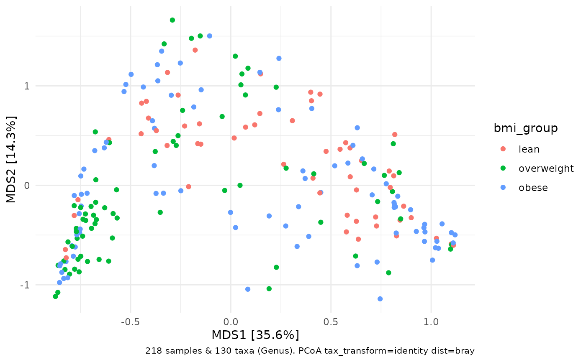

dist_permanova runs a Permutational Multivariate ANOVA (aka Non-parametric MANOVA).
This is a way to test for the statistical significance of (independent)
associations between variables in your phyloseq::sample_data(),
and a microbiota distance matrix you have already calculated with dist_calc().
This function is a wrapper around vegan's adonis2() function. See ?vegan::adonis2() for more insight.
You can also read this excellent book chapter on PERMANOVA by Marti Anderson: doi:10.1002/9781118445112.stat07841
Or this NPMANOVA page on GUSTA ME: https://sites.google.com/site/mb3gustame/hypothesis-tests/manova/npmanova
dist_permanova(
data,
variables = NULL,
interactions = NULL,
complete_cases = TRUE,
n_processes = 1,
n_perms = 999,
seed = NULL,
by = "margin",
verbose = TRUE,
...
)ps_extra output from dist_calc()
character vector of variables to include in model or character representation of the right-hand side of a formula, e.g "varA + varB + varA:varB"
optional argument to define any interactions between variables, written in the style of e.g. "var_a * var_b"
if TRUE, drops observations if they contain missing values (otherwise stops if missings are detected)
how many parallel processes to use? (on windows this uses parallel::makePSOCKcluster())
how many permutations? e.g. 9999. Less is faster but more is better!
set a random number generator seed to ensure you get the same results each run
passed to vegan::adonis2() by argument: what type of sums of squares to calculate? "margin" or "terms"
sends messages about progress if TRUE
additional arguments are passed directly to vegan::adonis2() (e.g. strata, add, sqrt.dist etc.)
ps_extra list containing permanova results and (filtered) input objects
The variables argument will be collapsed into one string (if length > 1) by pasting together, separated by "+". Any interaction terms described in the interactions argument will be pasted onto the end of the pasted variables argument. Alternatively, you can supply the complete right hand side of the formula yourself e.g variables = "varA + varB + varC\*varD"
Watch out, if any of your variable names contain characters that would normally separate variables in a formula then you should rename the offending variable (e.g. avoid any of "+" "\*" "|" or ":" ) otherwise permanova will split that variable into pieces.
data("dietswap", package = "microbiome")
# add some missings to demonstrate automated removal
phyloseq::sample_data(dietswap)$sex[3:6] <- NA
# compute distance
testDist <- dietswap %>%
tax_agg("Genus") %>%
tax_transform("identity") %>%
dist_calc("bray")
PERM <- testDist %>%
dist_permanova(
seed = 1,
variables = c("sex", "bmi_group"),
n_processes = 1,
n_perms = 99 # only 99 perms used in examples for speed (use 9999+!)
)
#> Dropping samples with missings: 4
#> 2022-10-12 17:11:10 - Starting PERMANOVA with 99 perms with 1 processes
#> 2022-10-12 17:11:10 - Finished PERMANOVA
PERM
#> ps_extra object - a list with phyloseq and extras:
#>
#> phyloseq-class experiment-level object
#> otu_table() OTU Table: [ 130 taxa and 218 samples ]
#> sample_data() Sample Data: [ 218 samples by 8 sample variables ]
#> tax_table() Taxonomy Table: [ 130 taxa by 3 taxonomic ranks ]
#>
#> ps_extra info:
#> tax_agg = Genus tax_transform = identity
#>
#> bray distance matrix of size 218
#> 0.7639533 0.731024 0.7283254 0.6637252 0.7437293 ...
#>
#> permanova:
#> Permutation test for adonis under reduced model
#> Marginal effects of terms
#> Permutation: free
#> Number of permutations: 99
#>
#> vegan::adonis2(formula = formula, data = metadata, permutations = n_perms, by = by, parallel = parall)
#> Df SumOfSqs R2 F Pr(>F)
#> sex 1 0.361 0.00933 2.1539 0.10 .
#> bmi_group 2 2.377 0.06143 7.0888 0.01 **
#> Residual 214 35.874 0.92720
#> Total 217 38.691 1.00000
#> ---
#> Signif. codes: 0 ‘***’ 0.001 ‘**’ 0.01 ‘*’ 0.05 ‘.’ 0.1 ‘ ’ 1
#>
str(PERM, max.level = 1)
#> List of 5
#> $ ps :Formal class 'phyloseq' [package "phyloseq"] with 5 slots
#> $ dist : 'dist' num [1:23653] 0.764 0.731 0.728 0.664 0.744 ...
#> ..- attr(*, "Labels")= chr [1:218] "Sample-1" "Sample-2" "Sample-7" "Sample-8" ...
#> ..- attr(*, "Size")= int 218
#> ..- attr(*, "call")= language as.dist.default(m = as.matrix(distMat)[keepers, keepers])
#> ..- attr(*, "Diag")= logi FALSE
#> ..- attr(*, "Upper")= logi FALSE
#> $ ord : NULL
#> $ info : 'ps_extra_info' Named chr [1:7] "Genus" "identity" NA "bray" ...
#> ..- attr(*, "names")= chr [1:7] "tax_agg" "tax_transform" "tax_scale" "distMethod" ...
#> $ permanova:Classes ‘anova.cca’, ‘anova’ and 'data.frame': 4 obs. of 5 variables:
#> ..- attr(*, "heading")= chr [1:2] "Permutation test for adonis under reduced model\nMarginal effects of terms\nPermutation: free\nNumber of permutations: 99\n" "vegan::adonis2(formula = formula, data = metadata, permutations = n_perms, by = by, parallel = parall)"
#> ..- attr(*, "F.perm")= num [1:99, 1:2] 1.892 0.748 0.283 2.748 0.956 ...
#> ..- attr(*, "Random.seed")= int [1:626] 10403 624 -169270483 -442010614 -603558397 -222347416 1489374793 865871222 1734802815 98005428 ...
#> ..- attr(*, "control")=List of 12
#> .. ..- attr(*, "class")= chr "how"
#> - attr(*, "class")= chr [1:2] "ps_extra" "list"
# try permanova with interaction terms
PERM2 <- testDist %>%
dist_permanova(
seed = 1,
variables = "nationality + sex * bmi_group",
n_processes = 1, n_perms = 99
)
#> Dropping samples with missings: 4
#> 2022-10-12 17:11:10 - Starting PERMANOVA with 99 perms with 1 processes
#> 2022-10-12 17:11:10 - Finished PERMANOVA
PERM2$permanova
#> Permutation test for adonis under reduced model
#> Marginal effects of terms
#> Permutation: free
#> Number of permutations: 99
#>
#> vegan::adonis2(formula = formula, data = metadata, permutations = n_perms, by = by, parallel = parall)
#> Df SumOfSqs R2 F Pr(>F)
#> nationality 1 4.859 0.12558 34.2219 0.01 **
#> sex:bmi_group 1 0.321 0.00828 2.2576 0.06 .
#> Residual 212 30.099 0.77794
#> Total 217 38.691 1.00000
#> ---
#> Signif. codes: 0 ‘***’ 0.001 ‘**’ 0.01 ‘*’ 0.05 ‘.’ 0.1 ‘ ’ 1
# specify the same model in alternative way
PERM3 <- testDist %>%
dist_permanova(
seed = 1,
variables = c("nationality", "sex", "bmi_group"),
interactions = "sex * bmi_group",
n_processes = 1, n_perms = 99
)
#> Dropping samples with missings: 4
#> 2022-10-12 17:11:10 - Starting PERMANOVA with 99 perms with 1 processes
#> 2022-10-12 17:11:11 - Finished PERMANOVA
PERM3$permanova
#> Permutation test for adonis under reduced model
#> Marginal effects of terms
#> Permutation: free
#> Number of permutations: 99
#>
#> vegan::adonis2(formula = formula, data = metadata, permutations = n_perms, by = by, parallel = parall)
#> Df SumOfSqs R2 F Pr(>F)
#> nationality 1 4.859 0.12558 34.2219 0.01 **
#> sex:bmi_group 1 0.321 0.00828 2.2576 0.06 .
#> Residual 212 30.099 0.77794
#> Total 217 38.691 1.00000
#> ---
#> Signif. codes: 0 ‘***’ 0.001 ‘**’ 0.01 ‘*’ 0.05 ‘.’ 0.1 ‘ ’ 1
identical(PERM3, PERM2) # TRUE
#> [1] TRUE
# take same distance matrix used for the permanova and plot an ordination
PERM2 %>%
ord_calc(method = "PCoA") %>%
ord_plot(color = "bmi_group")

# this trick ensures any samples dropped from the permanova
# for having missing values in the covariates are NOT included
# in the corresponding ordination plot